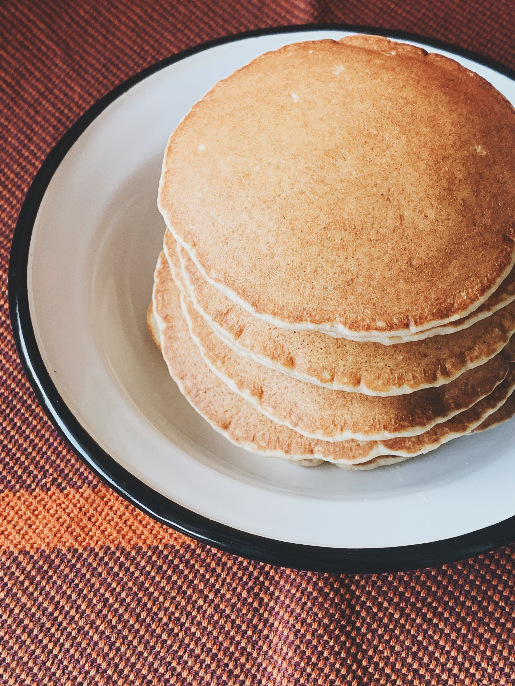

Odin Pancakes

Description
There is nothing quite like a tall stack of golden, ultra-fluffy homemade pancakes on a lazy weekend morning. This foolproof recipe relies on simple pantry staples to produce light, airy pancakes that melt in your mouth.
Drizzle them with warm maple syrup and add a pat of real butter for the absolute ultimate classic breakfast comfort experience.
Ingredients
- 1 1/2 cups all-purpose flour
- 3 1/2 teaspoons baking powder
- 1 tablespoon white sugar
- 1 teaspoon salt
- 1 1/4 cups milk
- 1 egg
- 3 tablespoons butter, melted
Steps
- In a large mixing bowl, sift together the flour, baking powder, sugar, and salt. Make a small well in the center of the dry ingredients.
- Pour the milk, egg, and melted butter into the well. Whisk gently until the wet and dry ingredients are completely combined. It is totally fine if the batter remains slightly lumpy—do not overmix!
- Heat a lightly oiled griddle or non-stick frying pan over medium-high heat.
- Spoon or pour roughly 1/4 cup of batter onto the hot griddle for each individual pancake.
- Cook until tiny bubbles form on the surface of the pancake and the edges begin to look dry, then flip and cook the other side until lightly golden brown.
- Stack them high on a plate and serve immediately with butter and syrup.
Back to Home